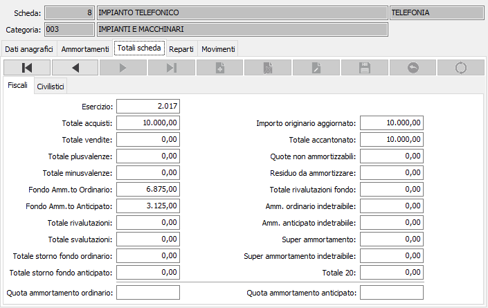

Totali scheda
La sezione video visualizza, senza possibilità di modifica, il riepilogo dei valori del cespite per ciascun esercizio; vengono visualizzati i totali dell'esercizio corrente. Tali valori vengono gestiti automaticamente dai programmi applicativi, in base ai “movimenti cespiti” effettuati nel corso dell’esercizio. Tramite i pulsanti di navigazione posti sopra i valori è possibile scorrere i valori degli esercizi presenti.
Se è presente la gestione secondo i criteri civilistici sono visibili due sezioni una per i totali fiscali e l'altra per i totali civilistici.
